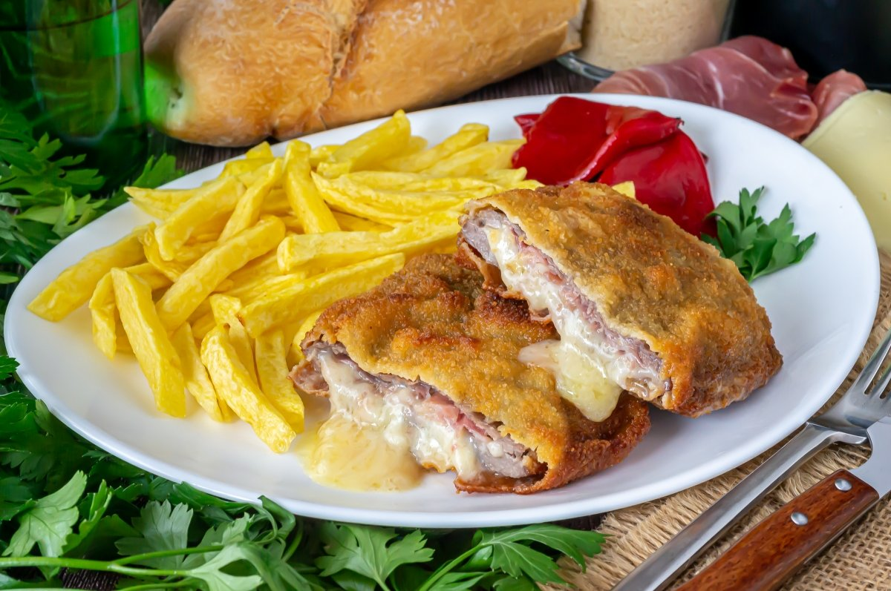

Lasagna

From Asturias with love
Typical Asturian dish consisting of two beef fillets with a filling between them, generally cheese and serrano ham, battered and fried.
These are the ingredients you'll need to prepare it:
- Flour
- 5 eggs
- Bread crumbs
- 2 beef steaks
- 10 slices of cheese
- 16 slices of serrano ham
How to prepare
Here's a very brief overview of what you can expect when you make cachopo:
- We must take the veal fillets, spread them out on a wide, clean surface, and cover them with transparent film.
- we turn them over, and place the slices of Serrano ham one by one until the entire surface of the cachopo is covered.
- continue to put the slices of cheese. This time we only cover one of the sides
- We fill the second cachopo in the same way as the first and set aside.
- We take the cachopos one by one and first we flour them on both sides, and we quickly add it to the egg.
- Take a cachopo and add it. As soon as it has browned, we turn it over, being very careful not to burn ourselves, and toast it on the other side